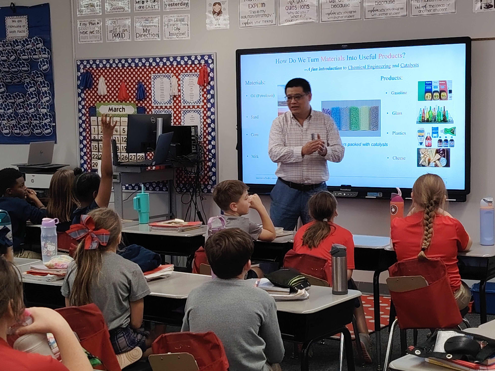

Outreach Activities
1. K–12 Outreach: STEM Seminar at A.E. Phillips Laboratory School
Dr. Xiao delivered a STEM seminar at A.E. Phillips Laboratory School to introduce K–12 students to chemical engineering and catalysis through interactive real-world examples.

As part of the group’s K–12 outreach efforts, Dr. Xiao visited A.E. Phillips Laboratory School to share how chemical engineering helps transform raw materials into useful everyday products. The seminar introduced students to core ideas in catalysis, materials, and chemical processes in an accessible and engaging way.
Using examples such as fuels, glass, plastics, and food products, the seminar demonstrated how science and engineering play an essential role in modern life. Students were encouraged to ask questions and actively participate in the discussion.
This outreach activity reflects our commitment to promoting STEM education, inspiring young students, and increasing awareness of chemical engineering among future generations.
2. Undergraduate Research
Dr. Xiao has advised seven undergraduate student assistants at Louisiana Tech University since March 2022.

Undergraduate research is an important part of our group’s outreach and training mission. Students participate in hands-on research projects involving catalysis, reaction engineering, materials synthesis, characterization, and computational modeling.
Through these experiences, students gain exposure to experimental design, data analysis, scientific communication, and teamwork, preparing them for graduate studies and careers in science and engineering.
3. AIChE Chem-E-Car Competition
Dr. Xiao has advised chemical engineering undergraduate students participating in the AIChE Chem-E-Car Competition.
The AIChE Chem-E-Car Competition provides students with an opportunity to integrate chemistry, reaction engineering, control systems, and engineering design into a practical project.
By mentoring Chem-E-Car teams, Dr. Xiao supports experiential learning and encourages students to apply classroom knowledge to real engineering challenges.
4. ACS Project SEED Program
Dr. Xiao advised two high school students, Piper Smith and Mir (Zayd) Ali, through the ACS Project SEED Program.

The ACS Project SEED Program provides high school students with research opportunities in chemistry and related fields. Students gain early exposure to laboratory research and scientific thinking.

Under Dr. Xiao’s mentorship, students participated in research related to catalysis and chemical engineering while learning experimental methods and laboratory safety.

These experiences help broaden participation in STEM and encourage students to pursue careers in science and engineering.
5. Seminar for Graduate Students
Dr. Xiao actively contributes to graduate student development through seminars and professional training activities.

Graduate seminars provide opportunities for students to broaden their technical knowledge, learn about emerging research topics, and develop professional communication skills.
These seminars also promote interdisciplinary discussions and collaboration within the research community.